Tokenization — from raw text to model input.
Transformers work with integer IDs, not raw text. Tokenization
is the process that turns a string such as "Daenerys Targaryen"
into those IDs. This lecture asks what a token should be, why obvious
choices fail, and how modern tokenizers make the trade-offs.
§0The deck at a glance
After defining the problem, the lecture covers WordPiece, Unigram LM and SentencePiece, Byte Pair Encoding, and byte-level variants. It closes by asking whether language models could avoid tokenization altogether.
§1What is a token, and why do we need one?
Slides 2 through 9 build the problem. A transformer expects a sequence of integer ids; tokenization is the machine that produces them. The intuitive answer — "a token is a word" — falls apart the moment you look at a real corpus, and it falls apart in different ways for different languages.
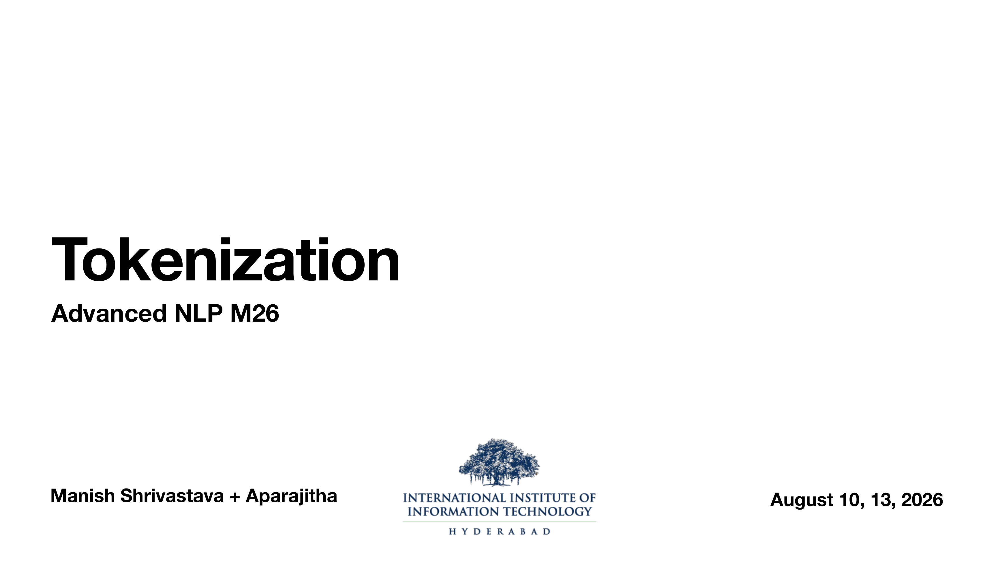
On the slide
Title slide. Tokenization is the third lecture of Advanced NLP Monsoon '26, delivered across two sittings on August 10 and 13, 2026 by Manish Shrivastava and Aparajitha Allamraju.
Why it takes two days
The two-day span is a hint. Tokenization sounds like a preprocessing footnote, but the design choices here decide what your model can and cannot represent — every OOV word, every fused morpheme, every emoji is fixed at this stage. The lecture spends time on it because the rest of the semester will keep referring back.
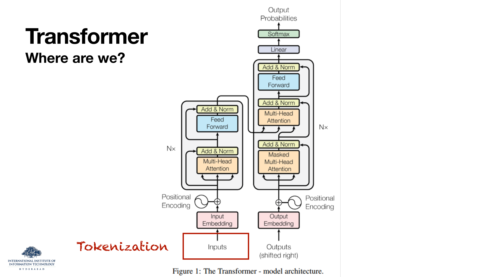
On the slide
The familiar Attention is All You Need diagram, with a red box drawn around the Inputs slot at the bottom of the encoder stack. That slot is where tokenization lives — it is the interface between raw text and the input embedding matrix.
What to take from it
Everything above that red box operates on vectors. But the transformer cannot ingest a string. Something has to chop the string into pieces, look each piece up in a vocabulary, and hand the model a sequence of integer ids that then index into the input embedding table. That "something" is the tokenizer, and it is not learned end-to-end with the rest of the network. It is trained separately, once, on a corpus of text, and then frozen.
The tokenizer is a preprocessor, not a layer. Its vocabulary is fixed before pretraining begins. Every downstream tradeoff — how long your context window feels, how well the model handles code, how it counts digits — is downstream of a design decision made at this stage.
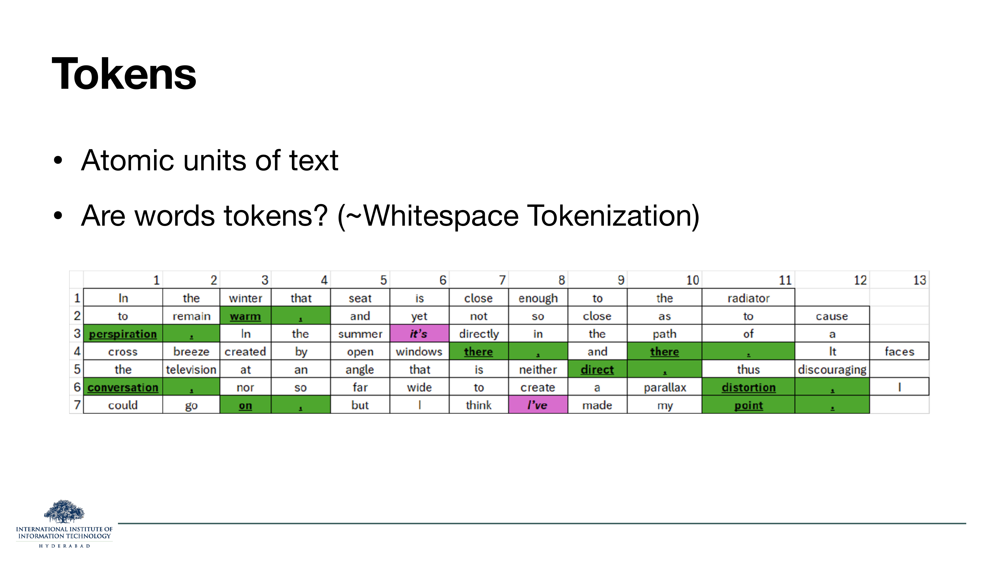
On the slide
A working definition — a token is an atomic unit of text — and then the obvious first guess: tokens are words, produced by splitting on whitespace. The table below shows English prose diced up cell-by-cell into whitespace-separated words, with contractions like it's and I've highlighted in pink because they resist that clean split.
What to take from it
Whitespace tokenization is what you would write in your first Python script: text.split().
It works surprisingly well for English on carefully curated text. But even in the table, the pink cells
already hint at trouble — it's is arguably two tokens (it + is), I've
is I + have. And that is before we look at any other language.
A token is whatever unit your model treats as indivisible — the thing that gets a single row in the embedding matrix and a single position in the input sequence.
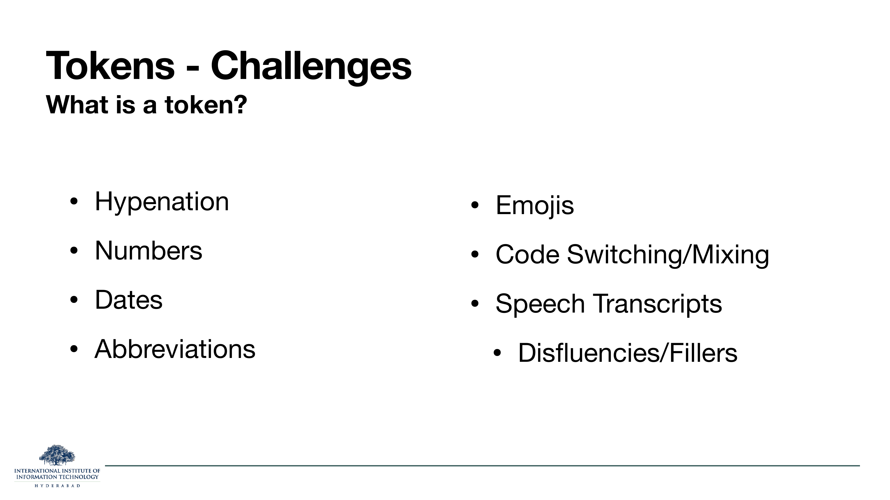
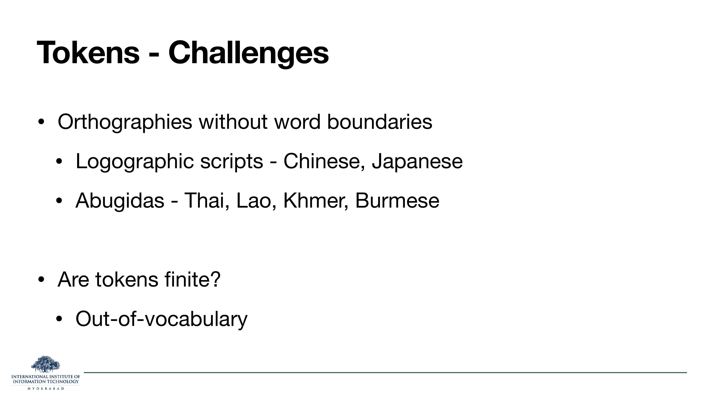
On these slides
Two slides listing the ways "a token is a whitespace-separated word" breaks. Slide 4 attacks English itself: hyphenation (state-of-the-art — one token or four?), numbers (1,000,000.50), dates (03/09/2026), abbreviations (Dr., U.S.A.), emojis, code-switching (a Hindi sentence with English brand names embedded), speech transcripts, and disfluencies (uh, um, restarts). Slide 5 attacks languages themselves: many of the world's writing systems don't use spaces between words at all.
What to take from it
The two failure modes are quite different in kind. English's edge cases are messy — you can write a longer regex and cover most of them. The second failure mode is deeper: logographic scripts (Chinese, Japanese) don't separate words with whitespace, and abugidas (Thai, Lao, Khmer, Burmese) run words together in a continuous stream of consonant-plus-vowel glyphs. Whitespace tokenization there produces one enormous "token" per sentence. There is no rule you can hand-write that fixes this cleanly.
The last bullet on slide 5 is the killer: are tokens finite? If tokens are words, then
every proper noun, every neologism, every misspelling, every URL is a new word. Your vocabulary will grow
without bound, and any word you didn't see during training becomes an out-of-vocabulary (OOV) token — usually mapped to a single <UNK>
symbol that erases whatever information it carried.
A word-level vocabulary is fundamentally open-ended, but your model's embedding matrix is fixed-size. Something has to give. Either you cap the vocabulary and accept OOV, or you break words into smaller pieces so any string can be reconstructed. The rest of the lecture is really about the second choice.
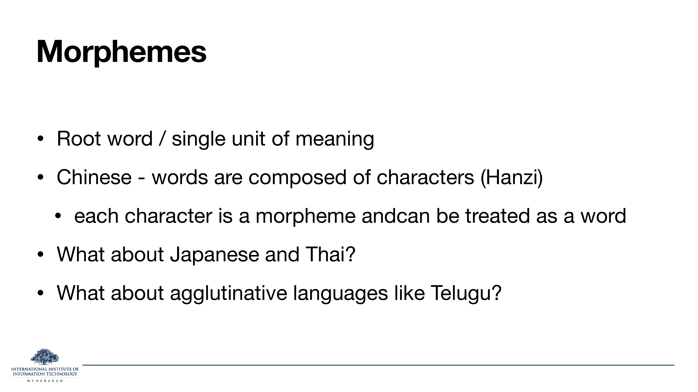
On the slide
A softer version of "what is a token" from linguistics: the morpheme, the smallest unit that still carries meaning. In Chinese each character (Hanzi) roughly corresponds to one morpheme; in agglutinative languages like Telugu, a single "word" can be a stack of six or seven morphemes glued together, encoding subject, tense, aspect, mood and negation all at once.
What to take from it
If you can't split on whitespace, maybe you can split on meaning. Morphemes look attractive because they are finite (there aren't that many suffixes) and semantically clean (each one has a meaning you could point at). The problem is that computing morpheme boundaries is itself a hard NLP task, and it's different for every language. This is why learned subword tokenizers — WordPiece, Unigram, BPE — end up winning: they don't need a linguist per language, they just need text.
Every algorithm from slide 12 onward is a machine-learnable stand-in for the morpheme idea. They don't recover linguistic morphemes exactly, but they land close enough that a large model can fill in the rest.
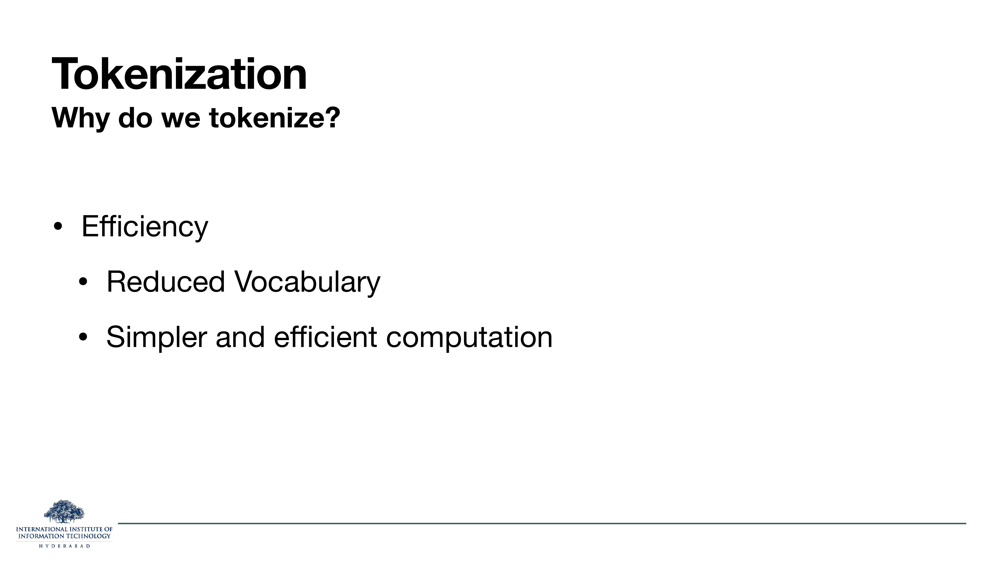
On the slide
A blunt answer to a question you might already be asking: why chunk at all? Why not feed the raw character stream to the model?
What to take from it
Two reasons, both about efficiency. First, reduced vocabulary: a subword vocabulary of ~30k–100k pieces is much smaller than the ~500k unique word-forms in an English web crawl, and much smaller output matrices at the softmax head mean cheaper training. Second, simpler computation: transformer attention is O(n²) in sequence length. Working with 200 subword tokens is roughly 5–6× cheaper than working with the ~1200 characters the same text expands to. Every token you avoid is a chunk of quadratic cost you don't pay.
Bigger vocab = shorter sequences (faster) but larger embedding matrix. Smaller vocab = longer sequences (slower) but tighter embedding matrix. Every tokenizer picks a point on this curve. Modern LLMs sit around 30k–200k pieces.
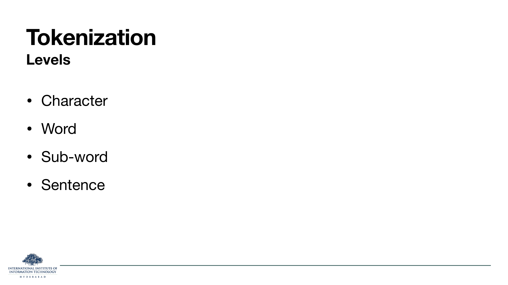
On the slide
The four granularities a tokenizer can operate at. From smallest to largest: character, subword, word, sentence.
What to take from it
Think of these as knobs on the vocabulary–sequence-length tradeoff from the last slide. Character level has a tiny vocab (~128 for ASCII, ~150k for Unicode) but very long sequences. Word level has short sequences but an unbounded vocab. Sentence level is short and useful for retrieval or classification but hopeless for generation. Subword is the compromise that everything modern uses — small-enough vocab, short-enough sequences, and (crucially) no OOV because any unseen word can be spelled out as a sequence of known pieces.
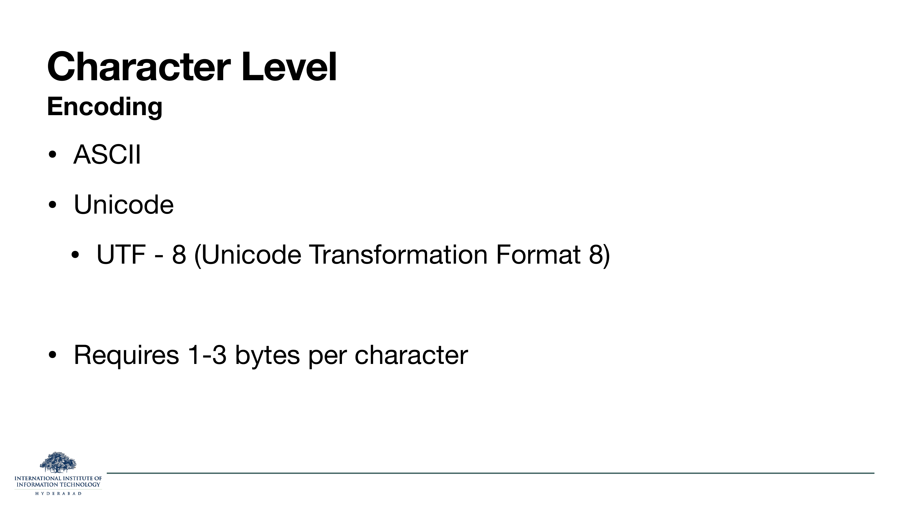
On the slide
If you go all the way down to characters, you need to know what "character" means to a computer. The slide names the three encodings you will actually encounter: ASCII (7-bit, 128 characters, English-only), Unicode (an abstract code-point registry covering every script, ~150k assigned), and UTF-8, the byte-level encoding of Unicode that uses 1 byte for ASCII characters and up to 4 bytes for other scripts.
What to take from it
UTF-8 is the one that matters. It is backward-compatible with ASCII (an English text file is already valid UTF-8), it handles every writing system, and it turns any string into a stream of bytes — a fixed alphabet of 256 symbols. That fixed alphabet is what makes byte-level tokenization possible, and we will meet it again on slide 22 when GPT-2's byte-level BPE shows up.
The high bits of the first byte say how many bytes make up this character (0xxx = 1 byte, 110x = 2,
1110 = 3, 11110 = 4). The slide says "1-3 bytes"; in practice the full standard runs to 4. Continuation
bytes always start with 10.
§2The four families of methods
Three slides that draw the map of the rest of the lecture. Every tokenizer you have ever seen is one of four things: whitespace, rule-based, statistical (i.e. learned from data), or no-tokenization at all.
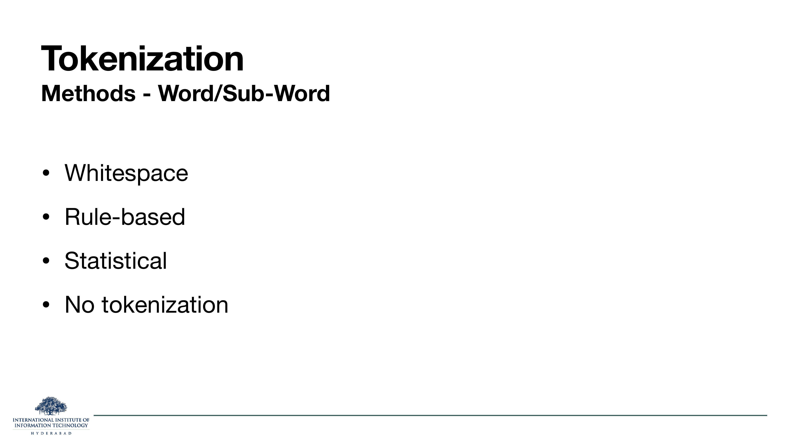
On the slide
The four families:
- Whitespace —
text.split(). Trivial but broken for many languages. - Rule-based — hand-written regexes and language-specific rules. NLTK's Penn Treebank tokenizer lives here.
- Statistical — vocabulary is learned from a corpus. WordPiece, Unigram LM, BPE. This is where the lecture spends most of its time.
- No tokenization — feed raw bytes/characters/pixels to the model and let it figure out chunking. The frontier, and the last third of the lecture.
Why the ordering matters
The families are listed roughly in order of increasing sophistication and increasing dominance in modern practice. GPT-4 and Llama are statistical; the research frontier is now trying to eliminate the stage entirely.
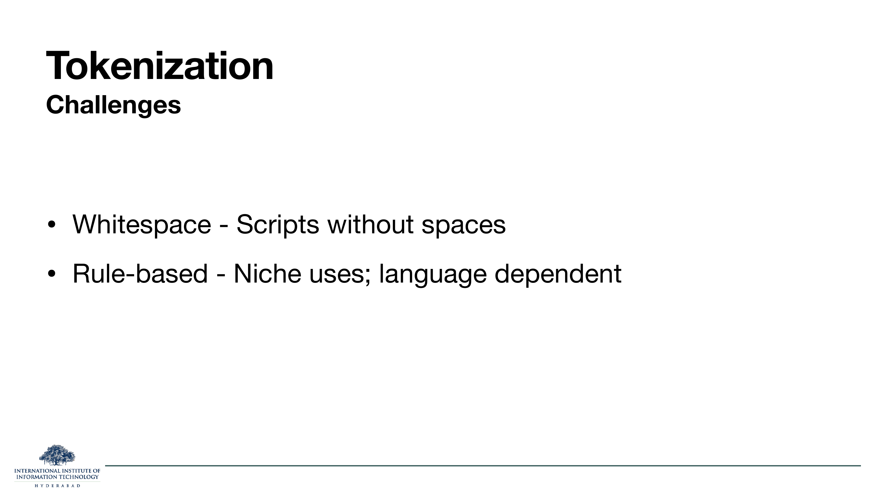
On the slide
A one-line dismissal of the first two families. Whitespace fails on scripts without spaces. Rule-based works but has to be rewritten for every language, which does not scale to a multilingual model that wants to speak 100 languages.
What to take from it
Rule-based tokenizers survive in narrow, high-precision settings — medical text, legal text, biomedical NER — where domain experts can encode "always split on this string, never split on that abbreviation" and the payoff justifies the maintenance. But for a general-purpose LLM, hand-written rules are a losing bet. The rest of the lecture is about the two remaining families.
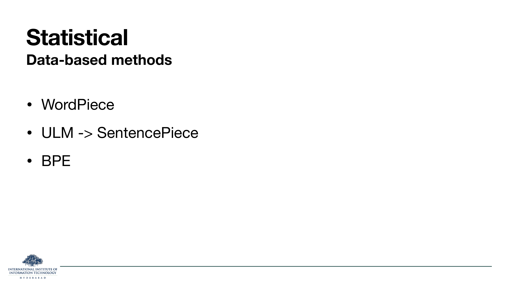
SentencePiece, BPE.">On the slide
The three statistical methods that the rest of the lecture will unfold in detail: WordPiece (§3), Unigram Language Model and its implementation SentencePiece (§4), and Byte Pair Encoding (§5).
Who uses what
Ballpark, so you can put the names to models you have heard of: WordPiece powers BERT and the DistilBERT family. Unigram + SentencePiece powers T5, ALBERT, XLNet, and most multilingual encoders. BPE (and its byte-level variant) powers GPT-2 through GPT-4, Llama, Mistral, and just about every autoregressive LLM. All three learn a subword vocabulary from a raw text corpus; they just disagree on the training objective.
WordPiece: merge the pair whose merge most increases corpus log-likelihood. Unigram LM: start big, prune the least-useful subwords with EM until you hit target size. BPE: merge the most frequent adjacent pair, over and over.
§3WordPiece — the BERT tokenizer
Two slides. WordPiece was introduced by Schuster and Nakajima in 2012 for Japanese and Korean voice search, and became famous when BERT adopted it in 2018. It is the oldest of the three statistical methods on our list.
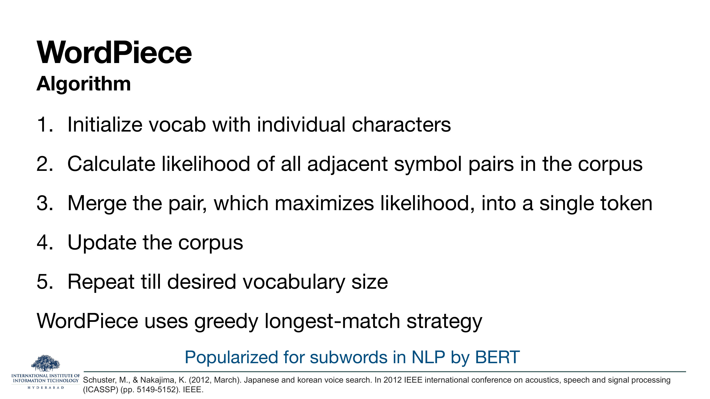
On the slide
The five-step training loop.
- Initialise the vocabulary with every individual character in the corpus.
- Compute, for every adjacent pair of symbols in the corpus, the likelihood gain if that pair were merged into a single token.
- Merge the pair with the highest gain into one new vocabulary entry.
- Update the corpus to use the new token wherever the pair appeared.
- Repeat until the vocabulary reaches the target size (BERT uses 30k).
At inference time, WordPiece uses a greedy longest-match strategy: scan left-to-right, always taking the longest subword in the vocab that matches at the current position.
What to take from it
The scoring rule is what distinguishes WordPiece from BPE. Instead of picking the most frequent pair (as BPE will), WordPiece picks the pair whose merge most improves a unigram language model of the corpus. Concretely, for a candidate pair (a, b) it looks at:
The ratio rewards pairs that co-occur specifically, not just pairs whose components are both common. So th wins over, say, e_ even if space-e is more frequent, because t and h are much more predictable together than apart.
BERT's vocabulary marks non-initial subwords with ## — e.g. playing tokenises to
play, ##ing. Those ## markers are how the model tells "this is
the start of a new word" from "this piece continues the previous word." A different marker convention
(▁ in SentencePiece) will show up in §4.
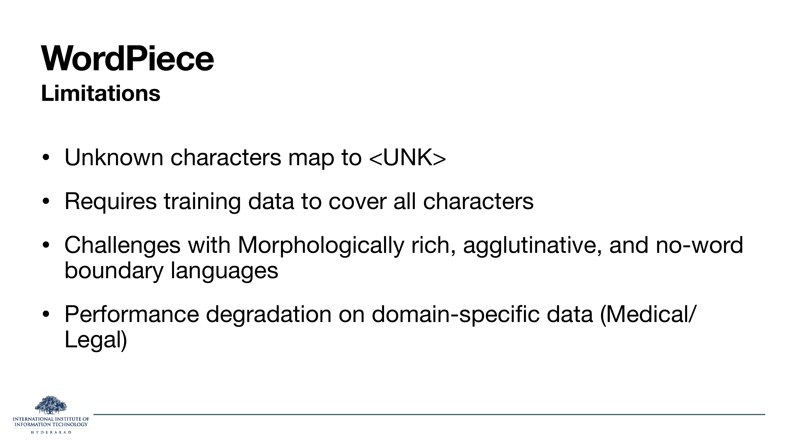
On the slide
Four failure modes.
- Unknown characters map to
<UNK>. If a character wasn't in the base vocabulary, WordPiece can't spell it. - You therefore need training data that covers all characters you might encounter — a hard bar for the long tail of Unicode.
- Still bad for morphologically rich, agglutinative, and no-word-boundary languages (Turkish, Finnish, Telugu, Thai). The greedy longest-match heuristic fights against languages that carry meaning in fine-grained affixes.
- Domain shift. A WordPiece vocab trained on Wikipedia will fragment medical terms (hydroxychloroquine) or legal Latinate boilerplate into unhelpful little pieces, and downstream performance drops.
What to take from it
Every problem here traces back to WordPiece's assumption that the training corpus is representative. When
the deployment domain diverges from the training domain — new scripts, new terminology, new noise — the
vocabulary is stuck. BPE and Unigram share the first three problems; only byte-level BPE (slide 22) fully
sidesteps the <UNK> issue.
§4Unigram Language Model & SentencePiece
Three slides. Unigram LM is Kudo (2018)'s alternative to greedy merging — instead of building up from characters, it starts with a huge candidate vocabulary and prunes. SentencePiece is the library that packages it (and BPE) into a language-agnostic tool used by half the field.
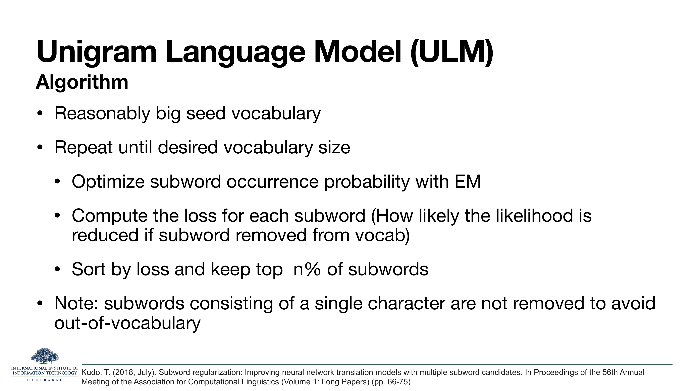
On the slide
The algorithm runs in the opposite direction of WordPiece and BPE. Instead of starting with characters and merging up, it starts with a big pool of candidate subwords (usually all frequent substrings up to some length) and iteratively removes the least useful ones.
- Build a reasonably big seed vocabulary — say ten times the target size.
- Loop until you hit the target size:
- Fit subword probabilities under a unigram language model using EM (Expectation-Maximisation): E-step re-computes the most likely segmentation of each word given current probabilities; M-step re-estimates probabilities from those segmentations.
- For each subword, compute the loss — how much the corpus log-likelihood would drop if this subword were deleted from the vocabulary.
- Sort by loss and keep the top n%. Drop the rest.
- Never drop single-character subwords — that guarantees no OOV, since any word can be spelled out one character at a time as a fallback.
What to take from it
Under a unigram LM, the probability of a segmentation factorises as
Every subword's contribution to the corpus likelihood is quantifiable, and the ones whose absence hurts least are the ones to prune. This is a cleaner objective than "count merges" — it optimises the vocabulary against a well-defined probabilistic model instead of a greedy frequency count.
Because Unigram LM keeps a probability distribution over segmentations, it can sample different segmentations of the same string during training. This is subword regularisation — a mild data augmentation that makes the model more robust. BPE and WordPiece are deterministic and can't do this natively.
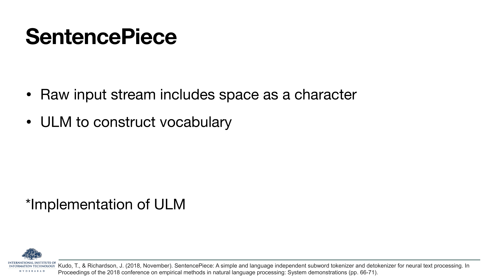
On the slide
SentencePiece is not a new algorithm. It is a library that implements Unigram LM (and BPE) in a language-agnostic way. Two design choices distinguish it.
The two design choices
First, it treats the input as a raw stream of characters, spaces included. Every other
tokenizer we have seen assumes text has already been split on whitespace. SentencePiece does not. It
literally replaces the space character with a visible marker (▁, U+2581 LOWER ONE EIGHTH
BLOCK) and treats that as just another character in the stream. This means it works identically on English
(space-delimited) and Japanese (not), and detokenisation is exact:
join(pieces).replace('▁', ' ').
Second, the vocab is built by ULM under the hood. So "SentencePiece" is best read as "SentencePiece(Unigram)" — although the same library can also run BPE if you ask it to.
Language-agnostic tokenisation is essential for multilingual models. T5, mT5, ALBERT, XLNet, and most multilingual BERTs all use SentencePiece for exactly this reason.
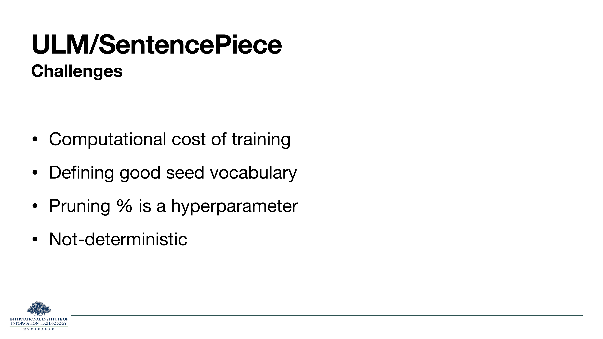
On the slide
Four honest disadvantages.
- Computational cost. EM over the whole corpus is expensive, and you rerun it many times as you prune.
- Seed vocabulary. You have to pick a good starting set of candidate subwords. Too small and you miss useful ones; too large and training is intractable.
- Pruning percentage is a hyperparameter — how aggressively to shrink at each round. Get it wrong and you either take forever or destroy useful subwords.
- Non-deterministic. The same string can be segmented multiple ways with non-zero probability. This is a feature at training time (subword regularisation) and a headache at deployment (you may want the same input to always produce the same tokens).
What to take from it
The last point is the big one. If reproducibility matters — for evaluation, caching, or debugging — you have to fix the segmentation to the argmax, which throws away the subword-regularisation advantage. BPE, coming up next, sidesteps all four of these.
§5Byte Pair Encoding — the workhorse
Eight slides on BPE and its byte-level cousin. If you learn one tokenization algorithm in this lecture, learn this one — every autoregressive LLM from GPT-2 to Llama-3 is a byte-level BPE model.
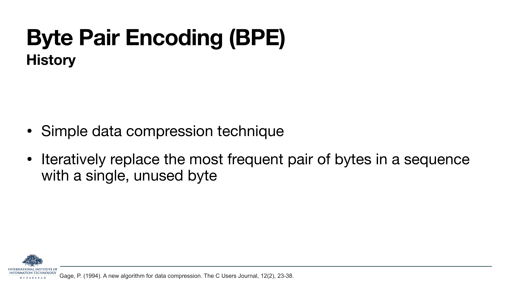
On the slide
Philip Gage's 1994 C Users Journal paper. BPE started life as a simple lossless data compression scheme: find the most frequent adjacent byte pair, replace every occurrence with a byte value that isn't yet used, and record the substitution in a dictionary. Repeat until no free byte values remain or no pair is worth merging.
Why this history matters
Sennrich, Haddow and Birch (2016) noticed that this trivial compression trick, applied to text and stopped early, produces exactly the kind of subword vocabulary a neural machine translation model wants. Frequent character sequences (ing, tion, the) become single tokens; rare words fall back to smaller pieces. No probabilistic model needed, no EM, just counting.
The best tokenizer in modern NLP is a 1994 file-compression algorithm with the "stop early" knob turned to about 30,000 merges. Sometimes the simplest tool wins.
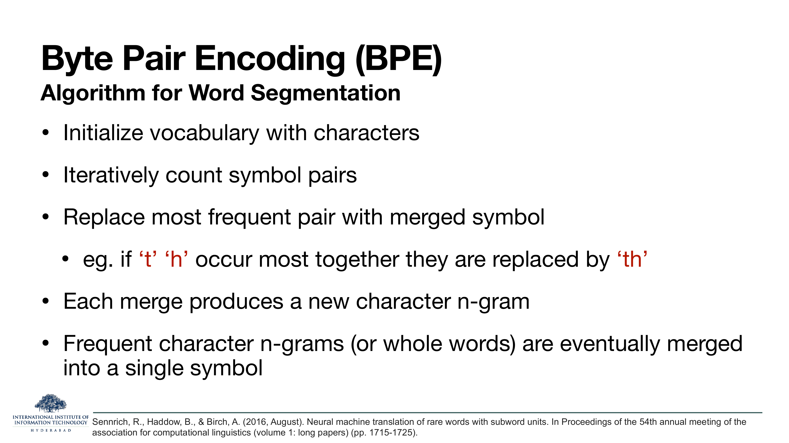
On the slide
The training loop.
- Initialise the vocabulary with every character in the corpus, plus an end-of-word marker.
- Count all adjacent symbol pairs.
- Merge the most frequent pair into a new symbol (e.g.
t+h→th). Add it to the vocab. - Every merge produces a new character n-gram; frequent n-grams and eventually whole common words get merged into single symbols.
- Repeat until you hit the target vocabulary size.
What to take from it
The scoring rule is the difference from WordPiece: BPE just picks the pair with the highest raw count. No likelihood, no probability. This is why BPE is fast to train and deterministic — there's no EM loop.
What you save at the end of training is the ordered list of merges. At inference time you apply them to a new word in the exact order they were learned: split into characters, then greedily apply merges. Because the order is fixed, tokenisation is fully deterministic.
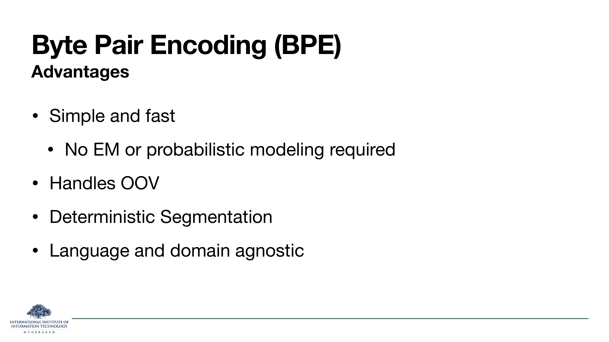
On the slide
Why BPE won. Four properties, all consequences of "count and merge, that's it":
- Simple and fast. No EM, no probabilistic model. Training a 32k-merge tokenizer takes minutes on modest hardware.
- Handles OOV. Because character-level fallbacks are always in the vocab, any unseen word can be spelled out.
- Deterministic. The merge list is ordered; segmentation is a fixed function of the string.
- Language and domain agnostic. You just point it at a corpus.
Why this combination matters
Compared to Unigram LM, BPE trades away subword regularisation (the ability to sample different segmentations) in exchange for speed and determinism. For a scaling-first regime — trillions of tokens, thousands of GPUs — the trade lands solidly on BPE's side.
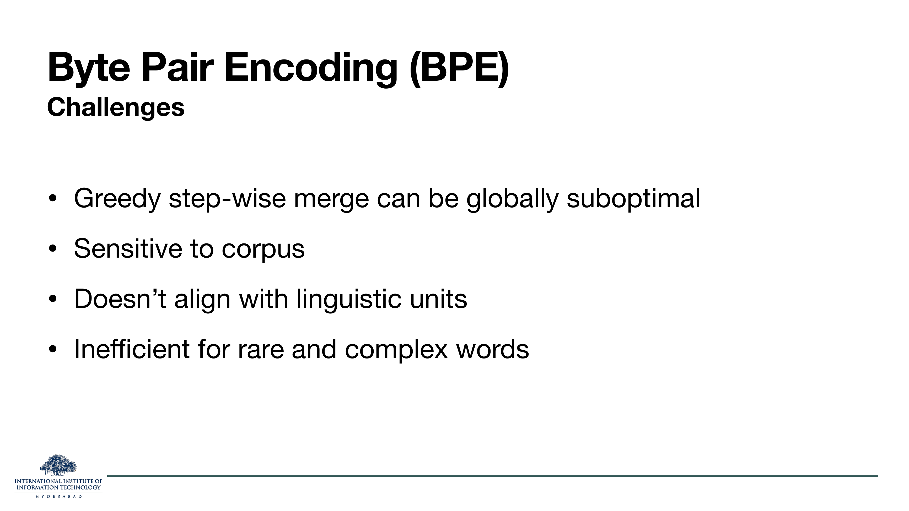
On the slide
The honest downsides.
- Greedy step-wise merge can be globally suboptimal. Merging a+b because it's frequent right now may block a better b+c merge later that would compress the corpus more overall.
- Sensitive to corpus. Change the training data slightly and you get a different vocab. This is why every model release has to ship its own tokenizer file — you can't just swap them.
- Doesn't align with linguistic units. BPE merges are frequency-driven; they cheerfully
split walking as
walk+ingbut might tokenise unhappiness asun+happ+iness, which is not what a linguist would draw. - Inefficient for rare and complex words. Rare words break down into many pieces, ballooning sequence length. This is especially painful for morphologically rich languages like Turkish or Finnish.
BPE is famously bad at arithmetic because it merges digit pairs based on frequency — 27
might be a single token but 28 is 2 + 8. Modern models sometimes
force a digit-splitting rule as pre-tokenisation to sidestep this.
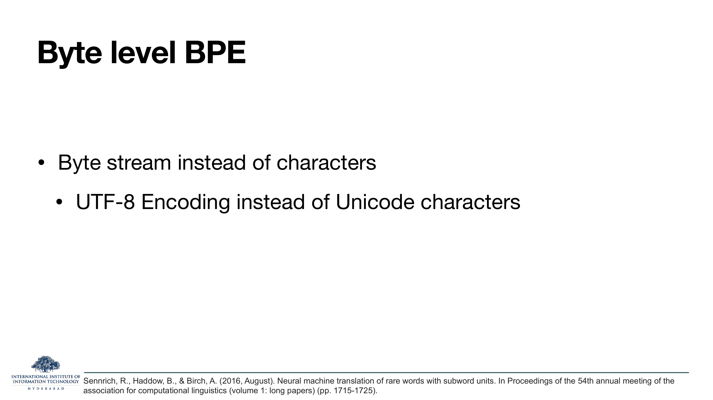
On the slide
The GPT-2 twist. Instead of running BPE over Unicode characters, run it over UTF-8 bytes. The base vocabulary is now the fixed 256 possible byte values, and merges happen over byte pairs.
What to take from it
UTF-8 encodes every Unicode character as a sequence of 1–4 bytes. So a Chinese character is 3 bytes, an emoji is 4 bytes, and every ASCII character is 1 byte. If your base vocabulary is those 256 bytes, then every possible input string is representable — there is no OOV, ever, for any character in any script. You've bought perfect coverage at the cost of one extra layer of encoding.
The base alphabet is finite and universal. Merges built on top of it may still learn "the byte sequence for common Chinese characters" as single tokens, so common text stays short — but the fallback all the way down to raw bytes is always available.
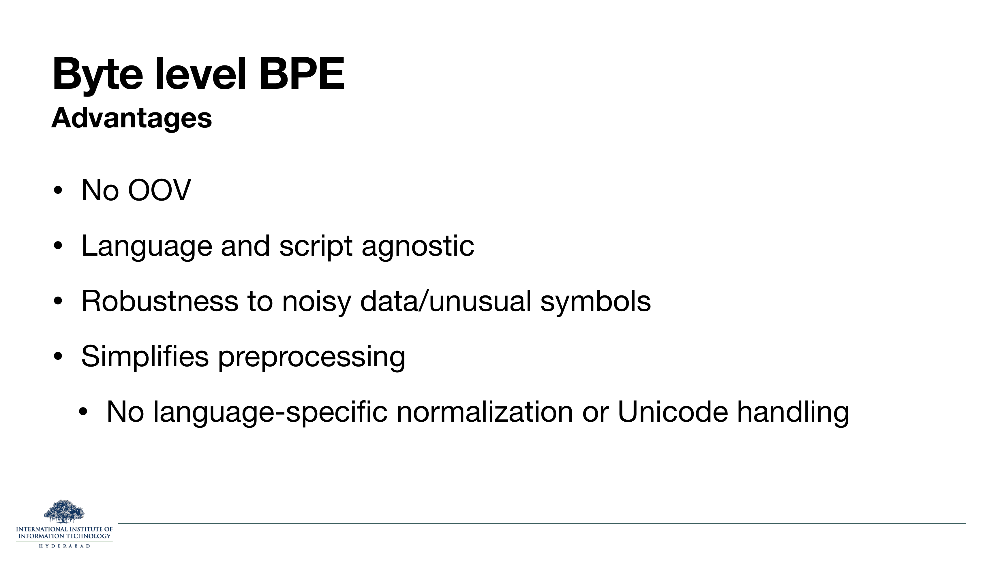
On the slide
Four wins over character-level BPE.
- No OOV. Every byte value 0–255 is in the base vocab. Anything encodable as UTF-8 is representable.
- Language and script agnostic. Works identically on English, Hindi, Chinese, emoji, source code, base64 strings — same tokenizer, same vocabulary.
- Robust to noisy data and unusual symbols. Corrupted characters, mojibake, mixed encodings — they all still tokenise as bytes.
- No language-specific preprocessing. You don't need per-language normalisers, case-folders, or accent strippers. The bytes are the bytes.
Why this matters practically
Byte-level BPE is why GPT-2 was the first model that could ingest more or less arbitrary internet text without a preprocessing pipeline breaking. It is now the default for almost every autoregressive LLM.
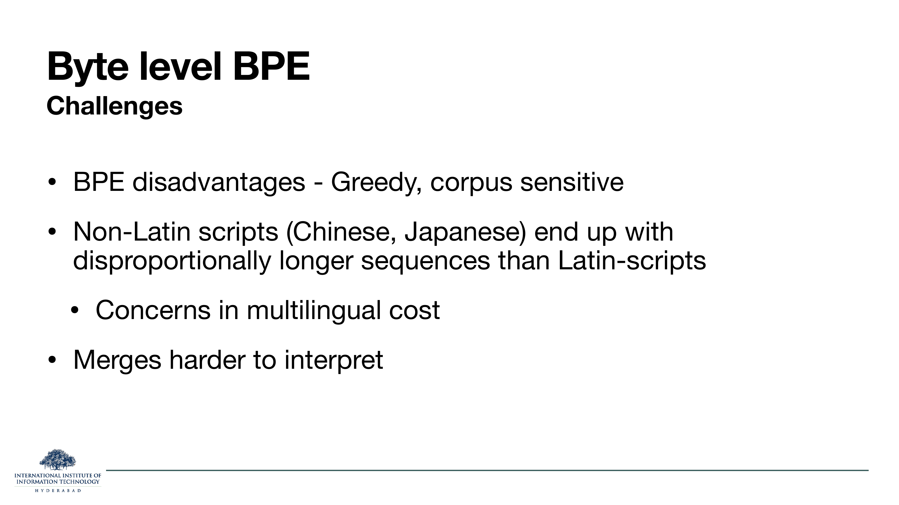
On the slide
Three problems, all inherited or worsened by the byte-level move.
- All of BPE's core disadvantages still apply — greedy merges, corpus sensitivity.
- Non-Latin scripts pay a token tax. Because a single Chinese or Japanese character takes 3 UTF-8 bytes, and English takes 1, English text tokenises into fewer tokens per unit of information. Multilingual models trained on mostly-English corpora end up spending more of their context window on Chinese sentences than English ones for the same meaning.
- Merges are harder to interpret. A character-level BPE merge like
i+n+g→ingis legible. A byte-level BPE merge combining bytes0xE4 0xB8is technically the first two bytes of a Chinese character prefix — meaningful, but you have to decode it to see what.
This is a real fairness issue. If your model charges per token and Hindi tokenises to 3× as many tokens per sentence as English, Hindi users pay 3× more for the same query. The next slide is a research response.
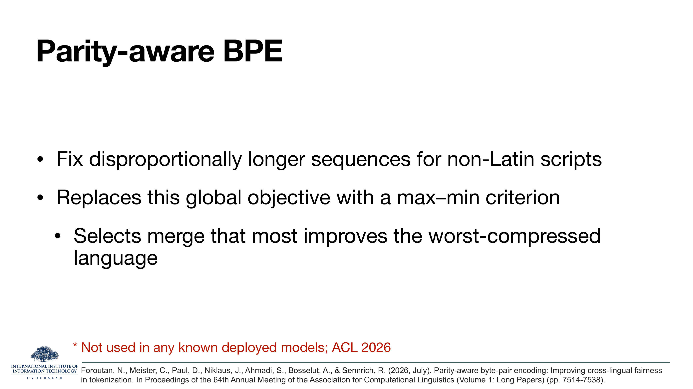
On the slide
A very fresh (ACL 2026) research response to the multilingual token-tax problem. The core idea: replace BPE's global total-frequency objective with a max-min objective. At each step, don't pick the merge that reduces the corpus total the most — pick the merge that most helps the language that is currently worst compressed.
What to take from it
Standard BPE, run on a corpus that is 80% English and 20% "everything else", will spend its merge budget on English patterns because that's where the frequency counts are. Parity-aware BPE deliberately breaks this: it looks at compression ratio per language and greedily improves whichever language is doing worst. The result is a vocabulary that treats each language more evenly, at some cost to the highest-resource language.
The slide notes "not used in any known deployed models". This is a research direction, not yet standard practice. Something to know exists, and to expect more of — cross-lingual fairness at the tokeniser level is a live area.
§6Skipping tokenization altogether
Nine slides on the frontier. Once you accept that even byte-level BPE has trade-offs, you start asking: do we need a fixed vocabulary at all? Can the model learn its own segmentation? These slides walk through the motivation, the family of approaches, and one recent design — the Byte Latent Transformer — in detail.
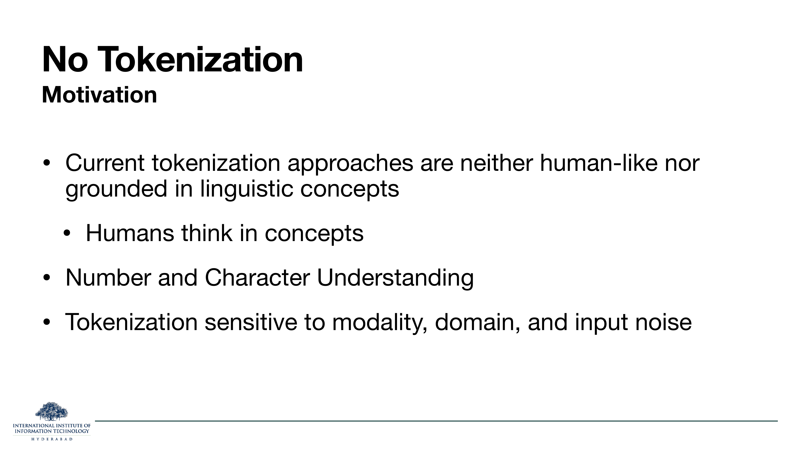
On the slide
Three grievances with the tokenization pipeline as it stands.
- Not human-like. Humans don't segment before reading. They compose meaning fluidly at multiple granularities at once.
- Number and character understanding is broken. A BPE-tokenised LLM famously cannot count the r's in strawberry, because strawberry is a single token — the model has no direct access to its letters. Arithmetic is unreliable for the same reason.
- Sensitive to modality, domain, and noise. A tokenizer trained on clean English breaks on code, on ASR transcripts, on any distribution shift.
The motivating question
What if there were no fixed vocabulary at all? What if the model consumed raw bytes and learned its own dynamic segmentation as part of the pretraining objective?
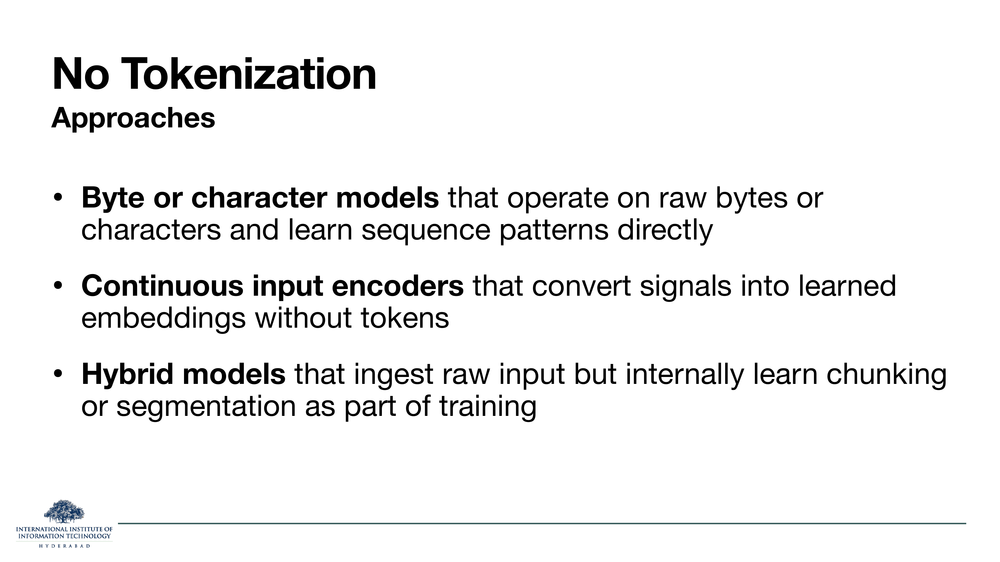
On the slide
Three families of "no-tokenization" designs.
- Byte or character models. Feed the raw byte or character stream directly to a transformer. The vocabulary is 256 (bytes) or ~150k (Unicode). Sequences get long, but there is no chopping step.
- Continuous input encoders. Skip the discrete tokens entirely — use a convolutional or perceptual front-end to turn the raw signal into learned embeddings. Common for speech and vision; being tried for text.
- Hybrid models. Ingest raw bytes but include a learned chunking module inside the network. The model itself decides where to draw segment boundaries, and those boundaries can shift with context.
Why hybrid is winning attention
Approach 1 is prohibitively slow (attention is O(n²), and byte sequences are ~5× longer). Approach 2 is hard to make work for text at scale. Approach 3 keeps the compute advantages of "long tokens" while learning them dynamically. This is where the frontier work sits.
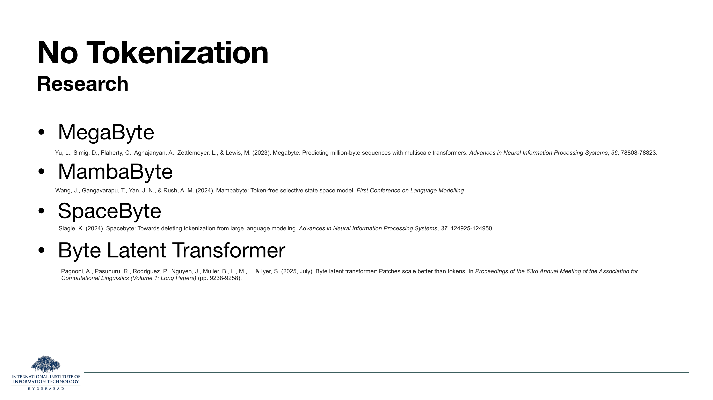
On the slide
Four papers that populate the "no-tokenization" bucket over the last three years.
- MegaByte (Yu et al., 2023, NeurIPS). Multiscale transformer for million-byte sequences, using fixed-stride patches.
- MambaByte (Wang et al., 2024, COLM). Byte-level state-space model — replaces the transformer with a Mamba backbone so the byte-length quadratic cost goes away.
- SpaceByte (Slagle, 2024, NeurIPS). Uses spaces as natural chunk boundaries. Simple, effective for space-delimited scripts.
- Byte Latent Transformer (Pagnoni et al., 2025, ACL). Entropy-based dynamic patching. The last few slides walk through this one.
What to take from it
Notice the arc: MegaByte fixes stride, SpaceByte uses spaces, BLT learns to segment dynamically based on model uncertainty. Each generation of the idea moves further from hand-designed segmentation toward learned segmentation.
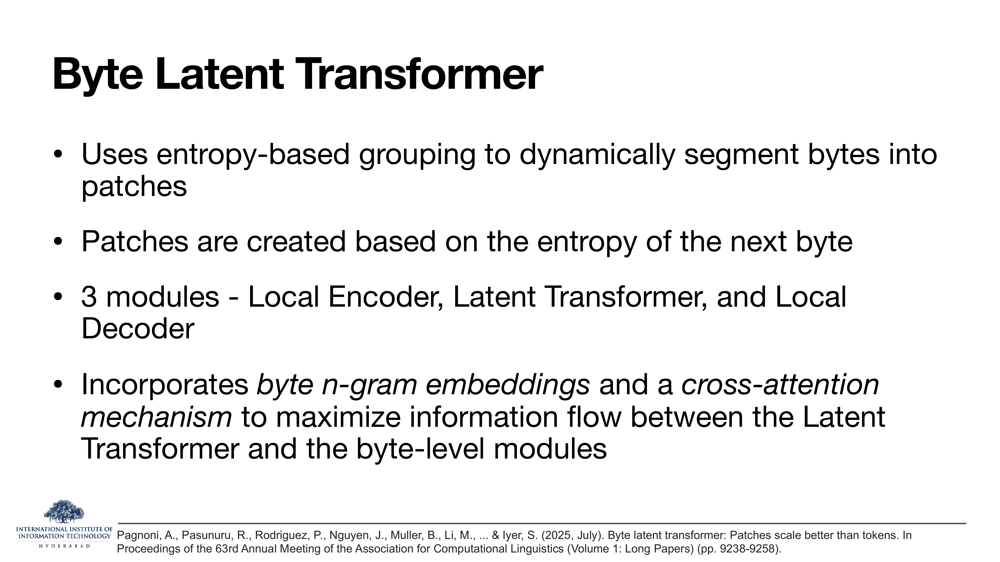
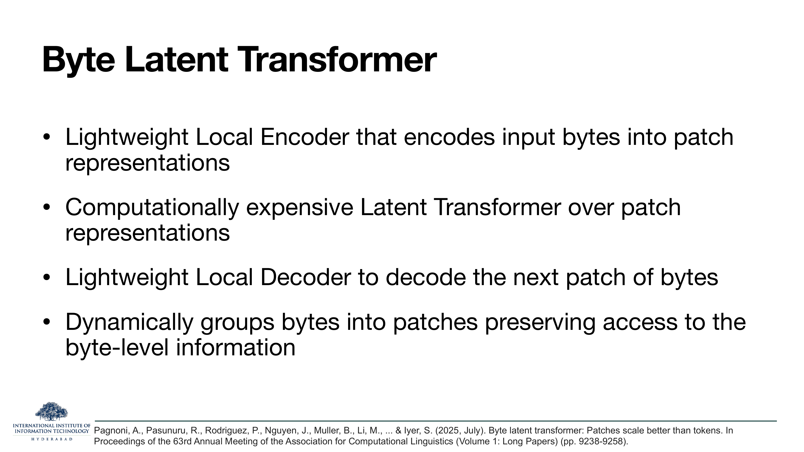
On these slides
Two slides describing the Byte Latent Transformer at the shape level. It has three modules stacked:
- A lightweight local encoder that reads the raw byte stream and emits per-byte hidden states, then aggregates them into patch representations via cross-attention.
- A large, expensive latent transformer that operates on those patch representations. This is where the heavy compute lives — and because patches are longer than bytes, the sequence is short.
- A lightweight local decoder that takes the latent transformer's patch output and decodes the next patch of bytes.
The How it works that makes this work
The clever bit is how the encoder decides where one patch ends and the next begins. It uses entropy-based grouping: a small byte-level model predicts the next byte; when its prediction distribution has high entropy (the model is uncertain), a patch boundary is drawn. When entropy is low (the model is confident), the current patch keeps growing.
The intuition is elegant. Boundaries fall where the model needs to "think harder" — the start of a new word, a rare character, an unexpected character. Predictable runs (the inside of a common word) get absorbed into one big patch, saving compute.
BPE decides its boundaries once, at training time, based on corpus frequency. BLT decides its boundaries at every forward pass, based on runtime uncertainty about the next byte. That is a fundamentally different regime — segmentation becomes a function of context, not a static preprocessor.
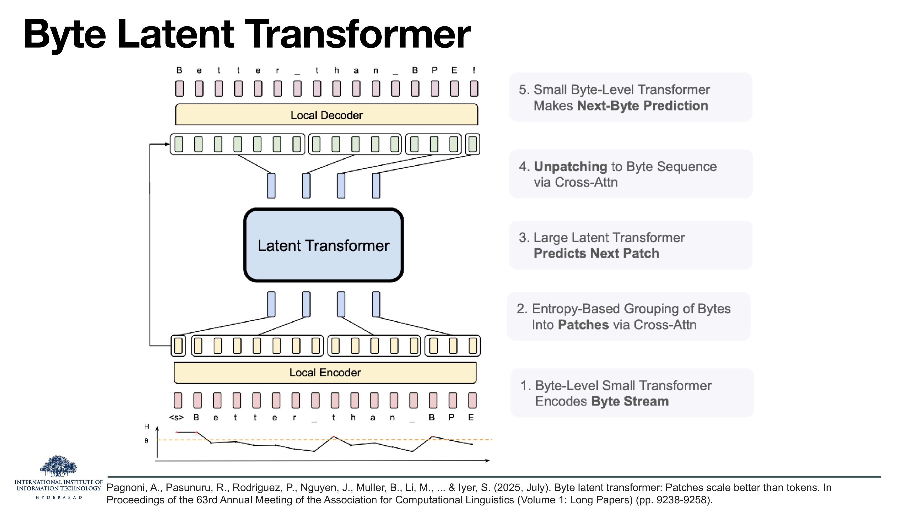
On the slide
The full BLT dataflow, drawn end-to-end on the sentence Better_than_BPE!. Trace it
bottom-up:
- Bottom curve: the entropy H over the byte sequence. It spikes at the start of each new word — B of Better, t of than, B of BPE. Those spikes are the red dots, and they mark the patch boundaries.
- The local encoder (a small byte-level transformer) reads all the bytes.
- Cross-attention groups bytes into patches based on the entropy dots.
- The latent transformer operates on those patches — the expensive part, but on a much shorter sequence.
- Cross-attention unpatches, splitting each patch representation back out to a byte sequence.
- The local decoder makes the actual next-byte prediction.
Why this shape
The heavy lifting happens on short patch sequences (cheap), but the input and output are still raw bytes (universal, no OOV, no preprocessing). The entropy-based boundaries mean the model spends its capacity where uncertainty lives, not where a frequency table said to.
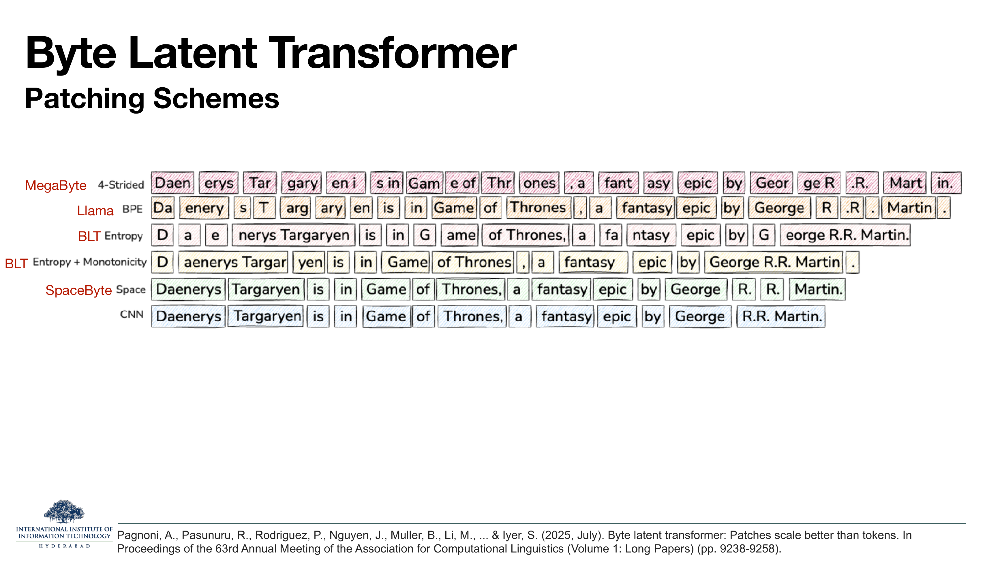
On the slide
The same sentence — Daenerys Targaryen is in Game of Thrones, a fantasy epic by George R.R. Martin. — chopped up six different ways.
- MegaByte, 4-strided: brutal fixed windows of 4 bytes. Slices words mid-morpheme.
- Llama BPE: subword pieces (
DaenerysTargaryen…), a familiar messy segmentation. - BLT Entropy: patches begin at high-entropy bytes. Rare parts get their own patch; predictable runs merge.
- BLT Entropy + Monotonicity: adds a constraint that patches keep growing until entropy
meaningfully rises. Produces longer, cleaner chunks like
aenerys Targandyen. - SpaceByte: chunks on spaces. Clean for English, useless for Chinese.
- CNN: whole-word chunks from a convolutional segmenter. Beautiful but rigid.
What to take from it
You can see the tradeoffs at a glance. Fixed-stride is dumbest but simplest; BPE fragments; BLT-Entropy adapts; SpaceByte and CNN are elegant when language cooperates. There is no free lunch, but BLT-Entropy has the best claim to "learned, language-agnostic, and byte-faithful all at once".
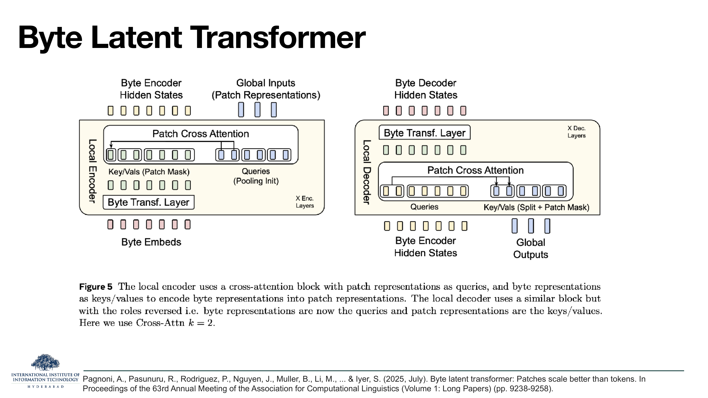
On the slide
Zooming into the encoder-and-decoder blocks. Both are built around a patch cross-attention module.
- Local encoder. Queries are patch representations (initialised via pooling of the bytes inside each patch). Keys and values are per-byte hidden states, masked so each patch only attends to its own bytes. Result: each patch is a summary of its bytes.
- Local decoder. Same block, roles reversed. Queries are now per-byte hidden states; keys and values are patch representations (split and masked so each byte attends only to its patch and the previous one). Result: each byte gets to "look back up" at its patch's latent representation before predicting the next byte.
k = 2 is the cross-attention neighbourhood — how many patches worth of context each byte
gets to attend to during decoding.
Why the roles reversal matters
This is the elegant symmetry that makes BLT work. The encoder squeezes bytes → patches; the decoder expands patches → bytes. Both operations are single cross-attention layers, cheap enough to keep the top-of-stack compute concentrated in the latent transformer.
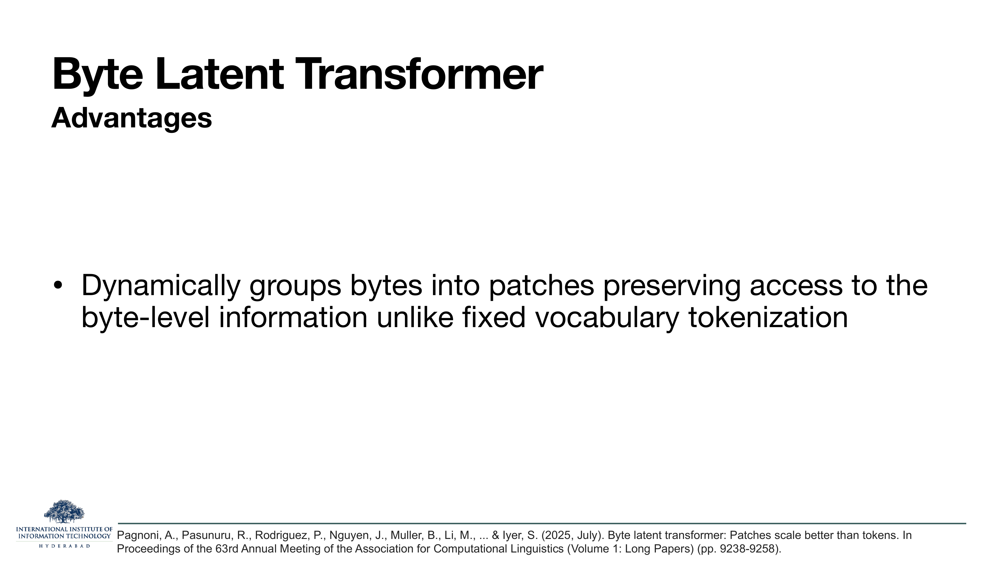
On the slide
One sentence summing up the whole "no-tokenization" arc. BLT-style architectures dynamically group bytes into patches, and — critically — preserve access to byte-level information that a fixed BPE vocabulary throws away.
What to take from it
With BPE, once strawberry becomes a single token, the model can never see its component bytes again. With BLT, the local encoder and decoder always operate at the byte level; the latent transformer just sees a compressed patch view for efficiency. So questions like "how many r's are in strawberry?" become answerable without special training, because the bytes are still there in the graph.
Tokenization has been the quiet interface between text and transformer for eight years. It is being replaced, right now, by architectures that push the segmentation decision into the model. Whether BLT specifically wins or something else does, the takeaway is: the fixed-vocabulary era of tokenization has an expiry date, and you are watching it approach.
The next lecture — Positional Encoding — is about the other thing the input embedding has to carry beyond the token identity: where in the sequence each token sits.